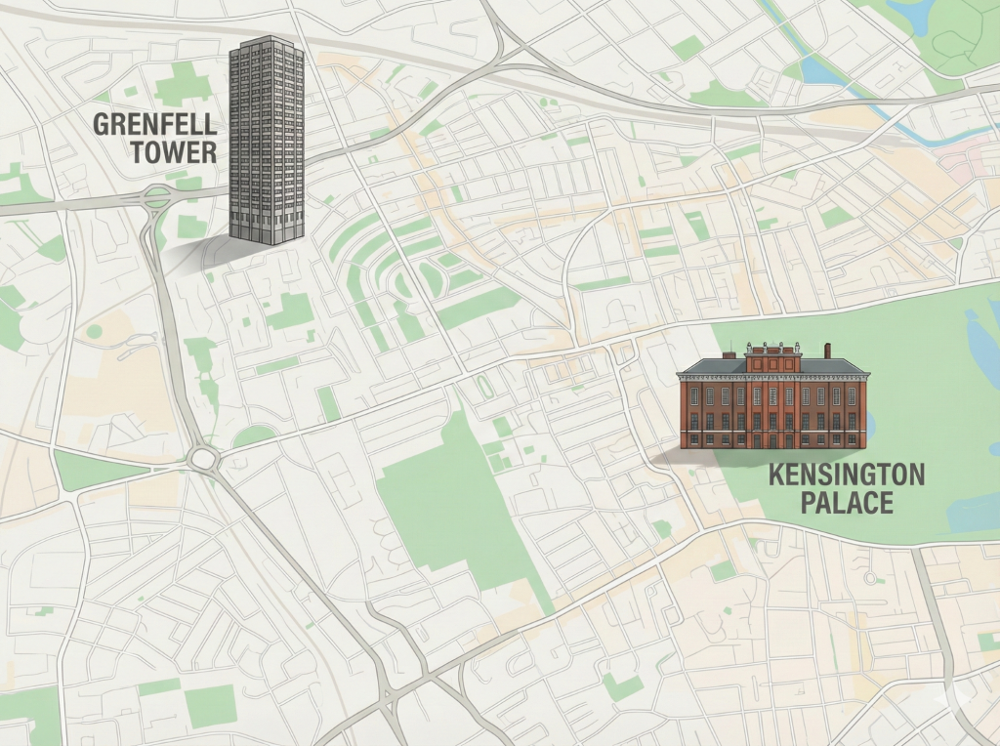

To begin this course, we will examine where Grenfell Tower was and what surrounded it. Few people realise that Grenfell stood within one of London’s wealthiest boroughs, close to some of the most expensive real estate in the city. Hence the title of this section: A tale of two Kensingtons.
Grenfell is in the Royal Borough of Kensington - a historic district of West London known for its grand architecture, prestigious residences, and significant cultural institutions, including the Royal Parks and museums like the Natural History Museum. It is home to Kensington Palace and is a hub for luxury living. Yet Kensington also has another side.


South Kensington
South Kensington represents an affluent part of the borough. Here, Victorian terraces and garden squares sit close to world-renowned institutions like the Victoria and Albert Museum, Natural History Museum, and Imperial College, which reinforce its cultural prestige, while high-end boutiques and expensive restaurants cater to affluent residents. Cross the Westway northward, and the landscape transforms dramatically.
North Kensington
North Kensington, including Ladbroke Grove and Notting Dale, tells a different story. Social renting is far more common here: at the 2011 Census, 55% of North Kensington households rented social housing, compared with 25% across the borough. The tragic Grenfell Tower fire in 2017 highlighted the area’s challenges, symbolising the struggles of communities facing housing pressures and uneven access to opportunities.
Source: A Journey of Recovery: Needs Assessment (2018), Table 1 [R006].